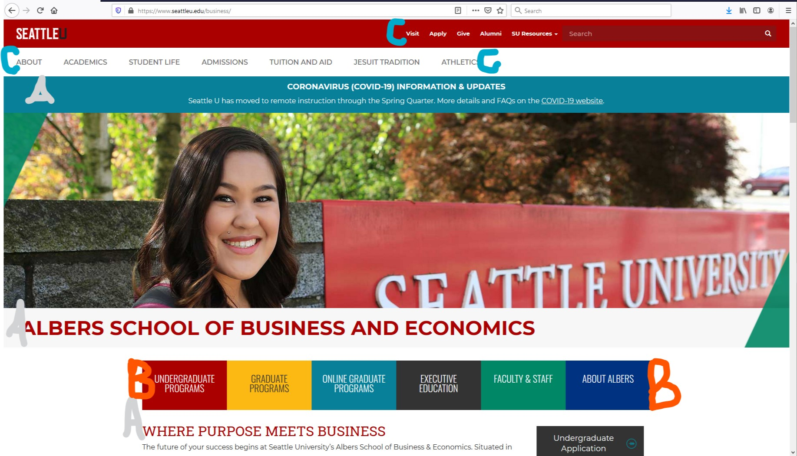

Impressions: Albers School of Business, Seattle University
I'm posting a usability analysis of the Albers School of Business and Economics Website at https://www.seattleu.edu/business/. The website is a sub domain of the Seattle University website and its purpose is to provide school information and application access to web visitors. With this in mind, I chose to analyze using the following criteria from my reading of "Don’t Make Me Think!" by Steve Krug :
Billboard Design
 All the user sees before the first scroll.A clear visual hierarchy on each page: There seems to be a pretty effective hierarchy on the screen, with the most important headings more prominently placed, thicker font or in all-caps.
Advantage of conventions: Some obvious conventions are used and this benefits the page. Navigation to individual segments of the school are prominently displayed mid-page, allowing the visitor to click closer to areas of interest before first scroll lower on the page.
Effortless choice and Visual Peace
C. Keep user choice as close to mindless / Make it obvious what's clickable: It isn't immediately clear what's clickable, but resources aren't too understated either. More self-explanatory than self-evident. As mentioned in the conventions criterion, the prominent navigation to subpages is very helpful and makes up for the clickable issue. In the end, this use of convention works well and minimizes the work needed to improve the site.
D. Minimize noise / Omit needless words: I feel that there is a significant amount of text, but an acceptable amount, when the vast purpose of the page is considered. The page is designed with plenty of spacing between lines of text, allowing for a good amount of "white space". With the current focus on COVID-19, a banner has been added to the page to funnel users to a COVID-19 at Seattle University information site. I think this banner takes away more from the site for the informational user than it adds. It's redesign to less prominence could improve the site.